[Guy, Hermes & Poon, PRL 2015]
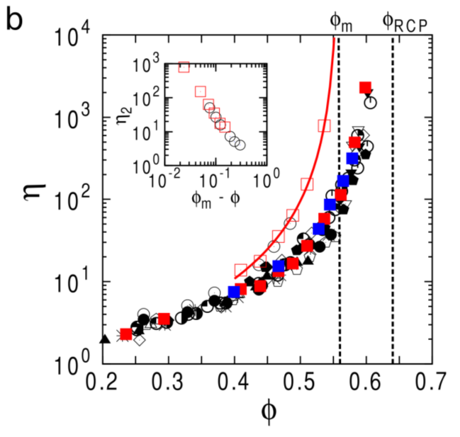
$d=4\mu m$
$d=0.4\mu m$
[Gallier et al, JFM 2014]
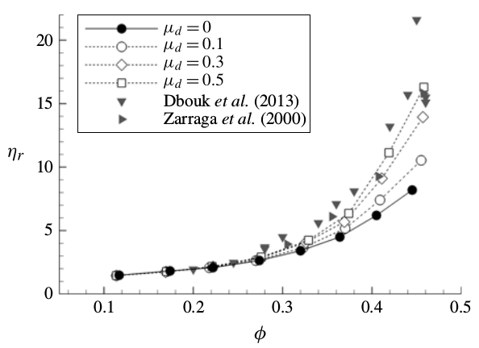
When is it frictional?
When particles touch!
-
No short range repulsion (besides hard core)
large particles
[Blanc, Peters & Lemaire, PRL 2011]
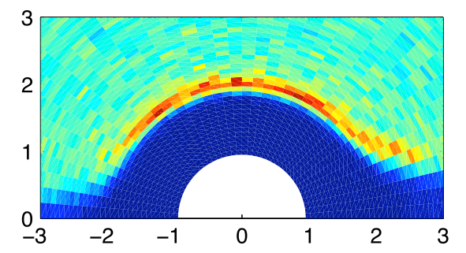
$d=170\mu m$
- Short range repulsion too weak
large stresses
- Contacts at any volume fraction
- Matters more at large volume fraction
Some consequences
[Isa et al, PRL 2009]
$\Delta P$
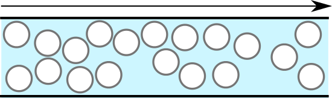
Propagating jammed pulses
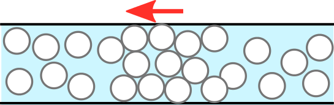
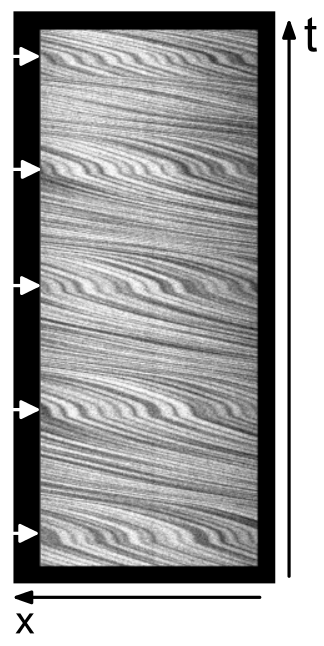
[Dumazer et al, PRL 2016]
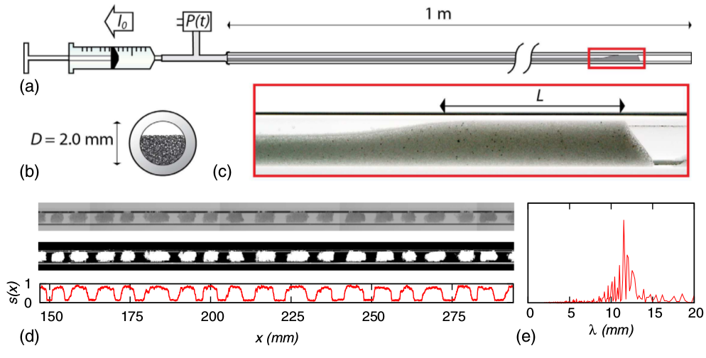
Janssen effect, silo honking?
[Bonneau, Catelin-Jullien & Andreotti, PRE 2010]
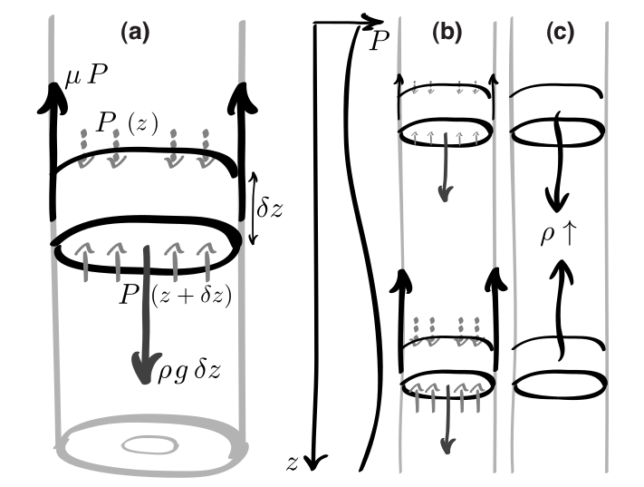
Shear thickening
[Youtube, Mach by Hong Leong Bank]
Shear thickening
[Cwalina & Wagner, JOR 2014]
260nm silica + polymer brush
in PEG 200
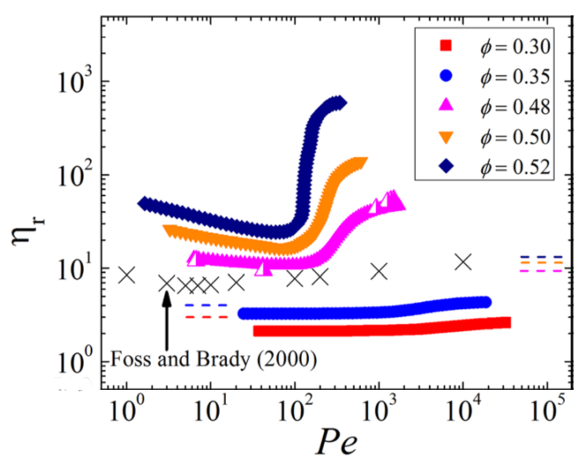
[Egres & Wagner, JOR 2005]
~500nm calcium carbonate
+ polymer brush in PEG 200
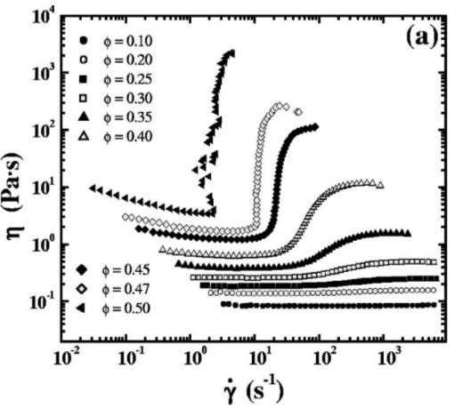
[Gallier et al, JFM 2014]
Stress-induced friction
Minimal shear thickening fluid
Simulations with:
- hard spheres
- Stokes regime
- frictional contacts, with Coulomb $|F^{\mathrm{t}}_{\mathrm{C}}|<\mu |F^{\mathrm{n}}_{\mathrm{C}}|$
- short-range repulsive force
- [hydrodynamics]
[Seto et al, PRL 2013]
[Mari et al, JOR 2014]
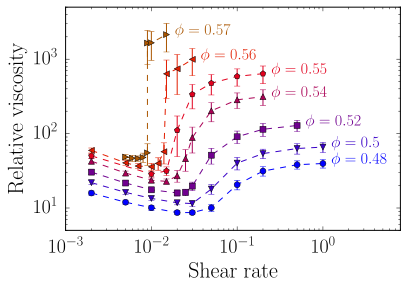
How does it compare to experiments?
[Mari et al, PNAS 2015]
With Brownian motion and repulsive force $F_{\mathrm{R}} = F^{\ast}e^{-h/\lambda_{\mathrm{D}}}$
Experiment:
Cwalina and Wagner (JOR, 2014)
260nm silica + polymer brush in PEG 200
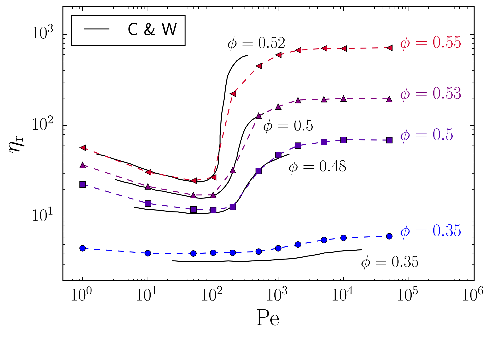
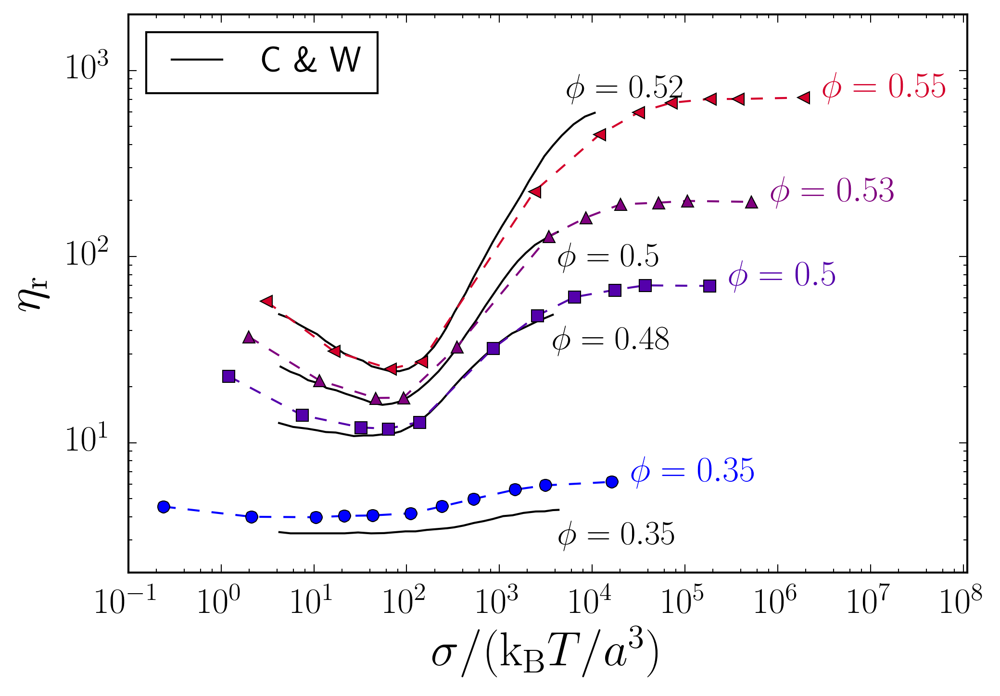
$\mu=1 \qquad F^{\ast} = 79pN \qquad \lambda_{\mathrm{D}} = 5.2nm$
Secondary thinning
Friction decreasing again?
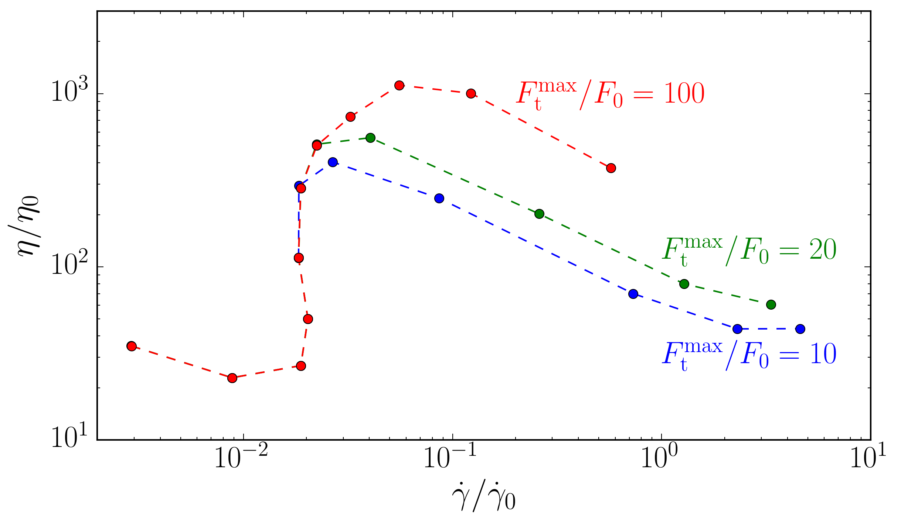
$|F^{\mathrm{t}}_{\mathrm{C}}|<|F^{\mathrm{max}}|$
What is friction microscopically?
Ability to stand static non-central force and/or torque.
Roughness
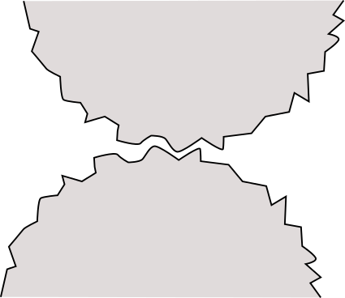
Standard granular contacts?
- Coulomb?
- Sliding friction
- Rolling friction
- Torsion friction
Polymer brush deformation
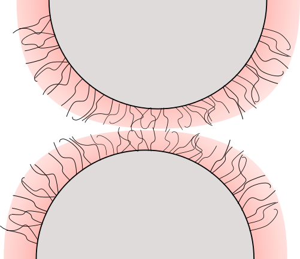
- Very low sliding friction [Klein, 1996]
- Rolling friction?
Polymer brush entanglement
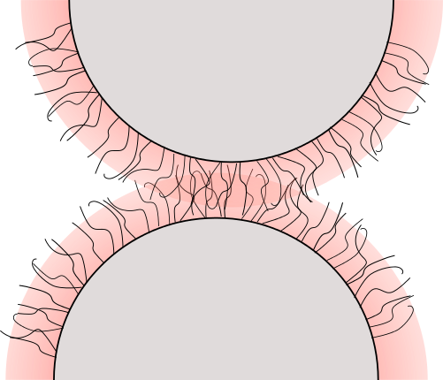
Static?
[Fernandez et al, 2013]
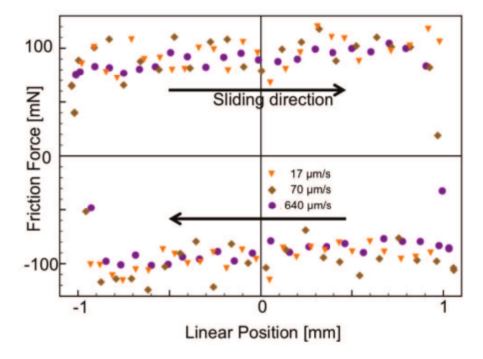
Long relaxation time
????
How to avoid friction?
Adding repulsion
Plasticizers: polymers on particles' surfaces (concrete, plaster, food)
[Nebesny & Dorota Zyzelewicz, 2005]
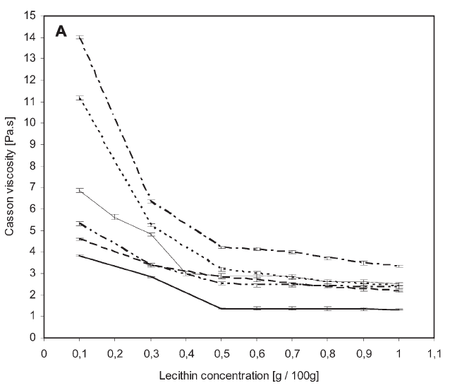
How to avoid friction?
Primary flows with oscillatory cross shear
"Unthickening" of a shear-thickening suspension (oobleck/cornstarch)
[Lin et al, PNAS, 2016]
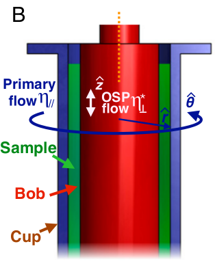
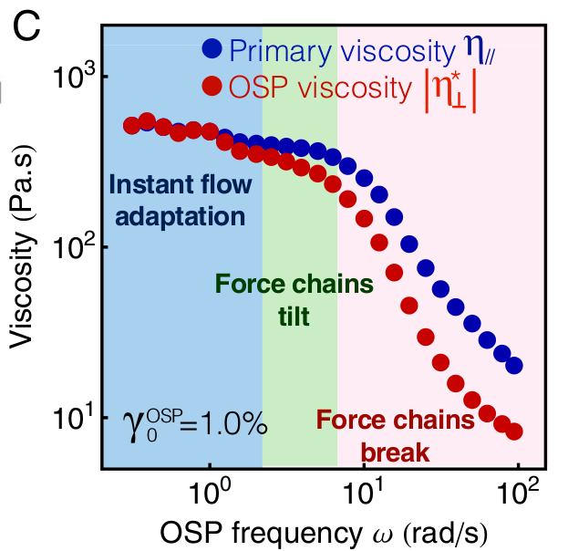
Speeding sedimentation of a large intruder
[Blanc, Lemaire & Peters, JFM, 2014]
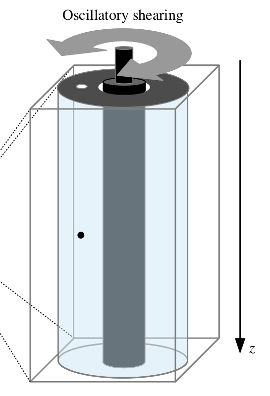
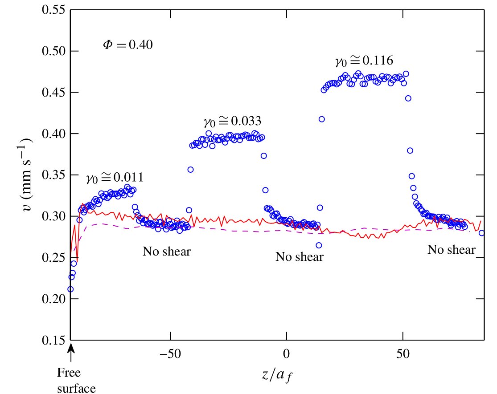
Generic? Dependent on thickening?
Simple shear + oscillatory cross shear
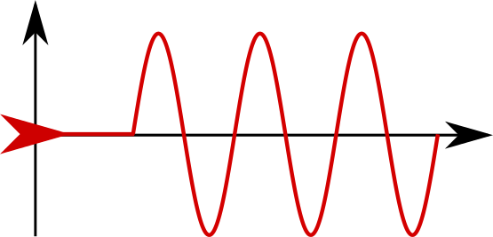
$\gamma_x$
$\gamma_z$
2 dimensionless numbers:
- amplitude $\gamma^{\max}_z = \dot \omega^{-1} \gamma_{\perp}$,
- rate ratio $\dot \gamma_{\perp}/\dot \gamma_0$.
$\dot\gamma_x = \dot \gamma_0$
$\dot\gamma_z = \dot \gamma_{\perp} \cos(\omega t)$
$\gamma_x = \dot \gamma_0 t$
$\gamma_z = \dot \omega^{-1} \gamma_{\perp} \sin(\omega t)$
Simple shear + oscillatory cross shear
When $\gamma^{\max}_z \approx 1\%$ and $\dot \gamma_{\perp}/\dot \gamma_0\gg 1$,
viscosity drop actually very generic.
Thickening suspension,
$\phi=0.56$, $\mu=1$
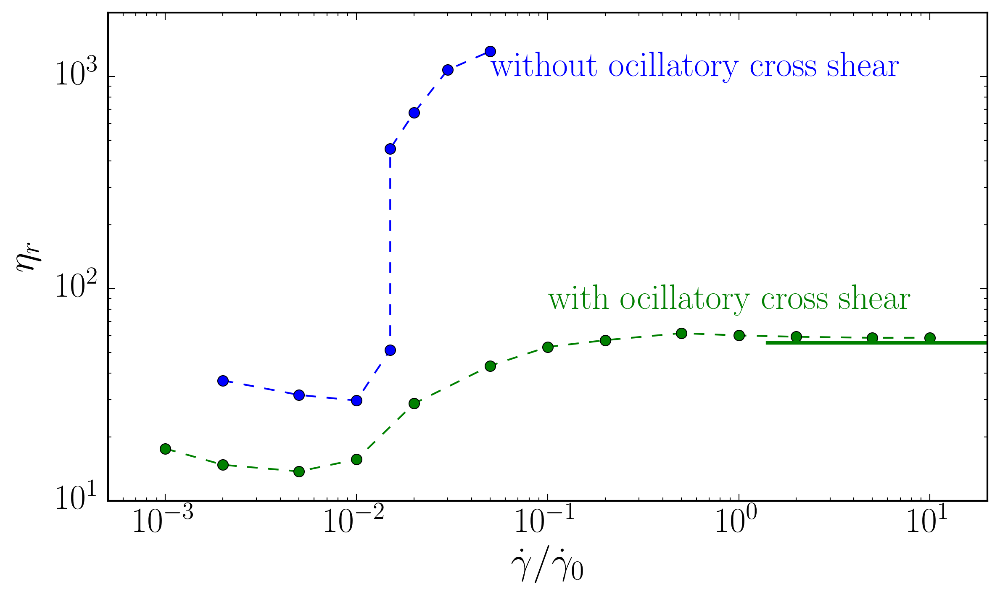
Simple shear + oscillatory cross shear
Viscosity drop due to contact number drop.
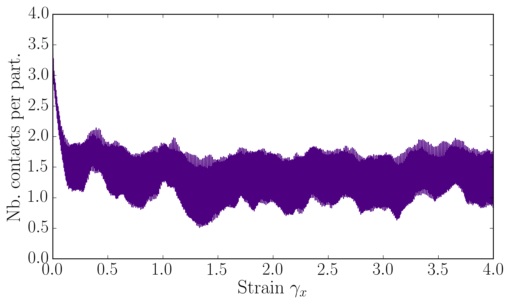
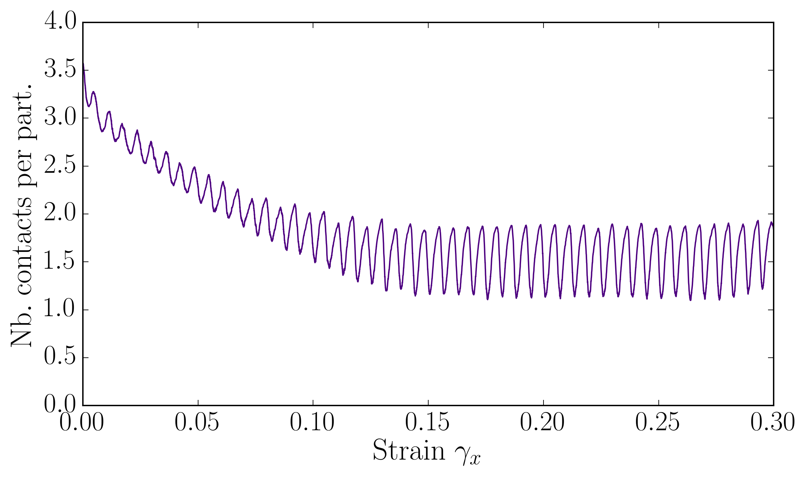
"Echo" experiment
[Pine, Gollub, Brady, Leshansky, Nature 2005]
Self-organization
$\phi < \phi_{\mathrm{c}}$
$\phi > \phi_{\mathrm{c}}$
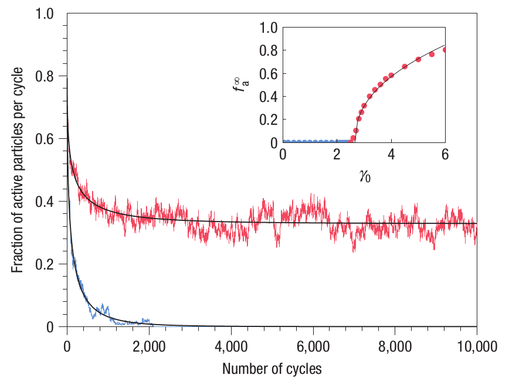
Simple shear + oscillatory cross shear
Viscosity drop for $\dot \gamma_{\perp}/\dot \gamma_0\gg 1$.
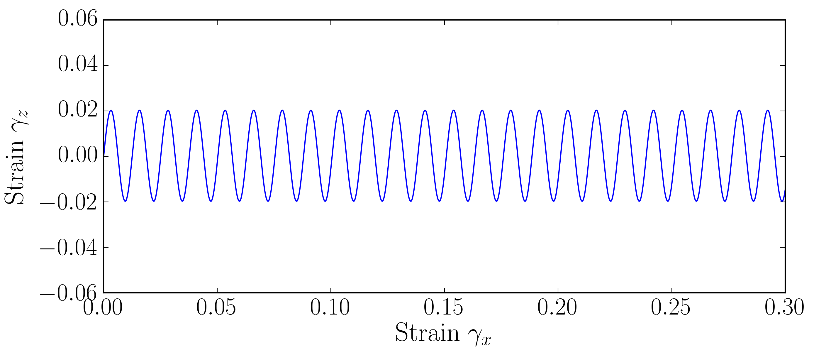
Viscosity drop when "echo" experiment + simple shear drift
[Corté et al, Nat. Phys., 2008]
Our simulation: simple shear + oscillations
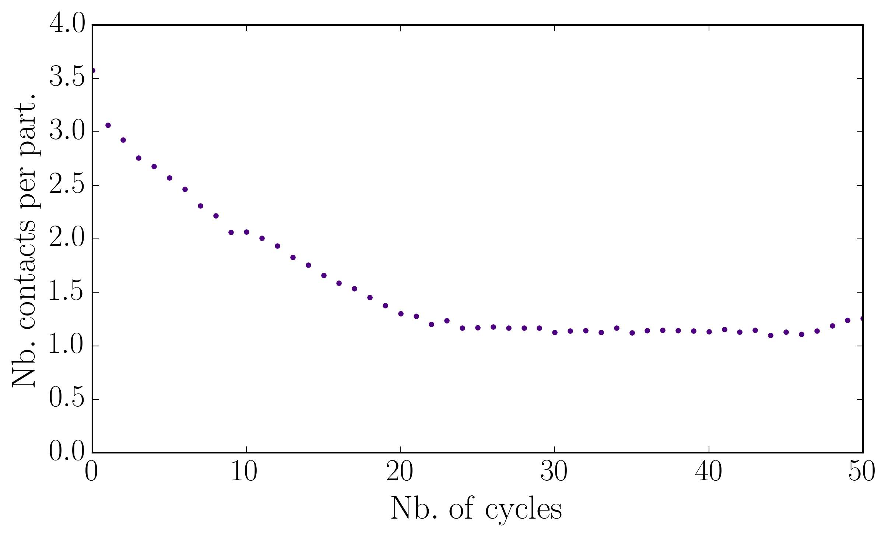
Where to go from here?
- Measurements of tangential forces at the particle scale ($1\mu m$)
- Associated contact models
- Friction with walls: confinement
- Rheology with rate-dependent friction? (Klein et al data)
- Extreme dependence on friction: flow instabilities
- Rheology by design?
Viscosity drop & volume fraction
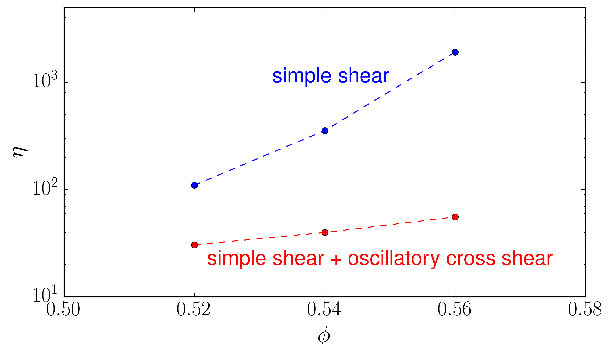
Flow instabilities
Stress-controlled
uniform flow curves
[Wyart & Cates, PRL 2014]
[Mari et al, PRE 2015]
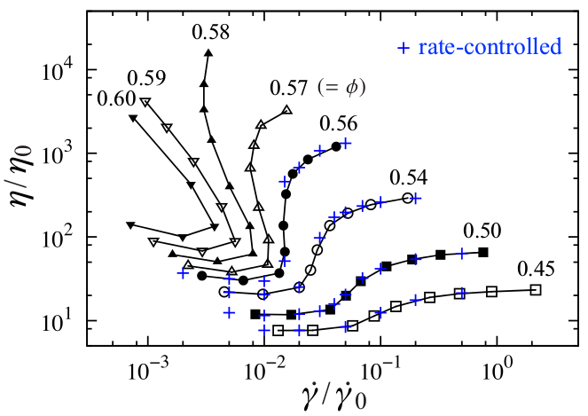
[Hermes et al, 2015]
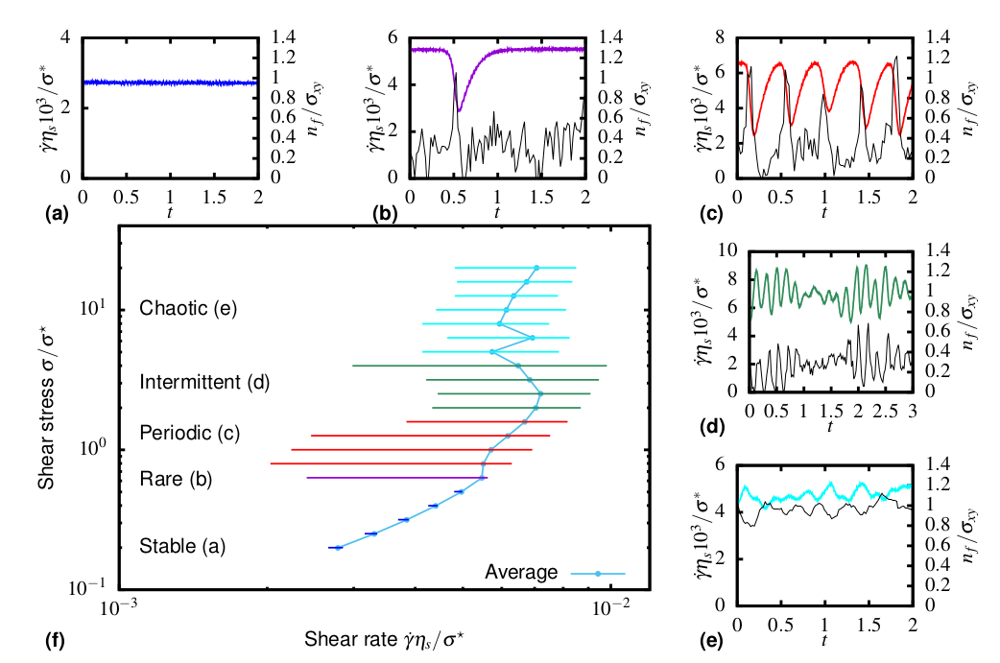
Vorticity banding
Modeling by Suspension Balance Model + Wyart-Cates thickening model
Mass conservation:
$\partial_t \phi + \partial_z v_z \phi = 0$
Force balance (migration):
$\partial_z \sigma_{zz} = -\phi \alpha (v_z-\bar{v}_z)$
(Toy) constitutive model:
$\sigma_{zz} = \eta(\phi, f) \dot\gamma$
$\partial_t f = -\dot\gamma \gamma_0^{-1} \left[f - f^{\ast}(\sigma)\right]$
Stress control:
$\sigma_0 = \langle \eta(\phi, f) \rangle \dot\gamma$